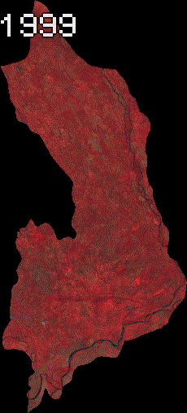

Landscape changes, my childhood, and the impact of man-made infrastructure
One of the privileges we have in our generation is to be able to see the earth from space. Thanks to satellite missions such as Sentinel 1, 2 and 3, as well as Landsat, we can have images of the earth's surface, which in favorable weather conditions (low cloud cover), we can see the earth in unprecedented spatial resolution, for license-free images. We can for example see details such as changes in forest cover, how cities are growing, and how constructions such as river dams change our landscape. This post is about the latter.
A few years ago I went to the community of El Valle de Las Lomas. This small town, located about 15 minutes from the city of David, Chiriquí, Republic of Panama, has a place in my heart. There I spent part of my summer vacations at my grandmother's house, and it was also the town where I had a lot of friends and family, with whom I played soccer and baseball in the afternoons.
In the photo I have posted here, you can see this boy (me about 4-5 years old), happy in the Cochea river.
Before the COVID-19 pandemic I had the opportunity to visit this river, and was surprised to see that all that was left was a creek in what used to be a flowing river, where my father and brother would go to spend the occasional afternoon fishing.
I was surprised by the great change in the scenery along some stretches of this river. Some stretches that used to be deep were now reduced to a small creek that could be crossed on foot without the water coming up to your knees.
Perhaps the reason was the severe dry season that was hitting the area for those months. What cannot be denied is that for a community as small as El Valle de Las Lomas, having a project of this magnitude meant a big change in land use, which can be seen in the following series of images from the Landsat 7 mission. Here you can see the construction works in the late 2000s, to begin the 2010s with a reservoir and the necessary infrastructure for the power plant.

No doubt this change in the landscape meant that many people gave up places where they used to spend happy afternoons with their families. While it is true that electricity generation is one of the priorities of our modern world, the search for clean, low-impact energy alternatives should be the gold standard in this regard. While I was still living in my homeland, I saw the back and forth between people for and against hydro-power projects, and of course, the positive and negative impacts were presented in a compelling way from both sides.
In the next post, we will look at how satellite data can be used to observe changes over time in land surface temperature in this location since the construction of this hydroelectric plant. We know that the time series is not that dense, but we can derive interesting information about this. In the meantime, and if you like the animation I generated, you can visit the following link where you can see the JavaScript code to generate this animation in Google Earth Engine.